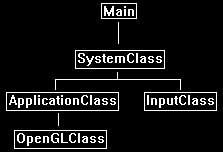

Before starting to code with OpenGL 4.0 I recommend building a simple code framework.
This framework will handle the basic windows functionality and provide an easy way to expand the code in an organized and readable manner for the purposes of learning OpenGL 4.0.
As the intention of these tutorials is just to learn the different features of OpenGL 4.0, we will purposely keep the framework as thin as possible and not build a full rendering engine.
Once you have a firm grasp on OpenGL 4.0 then you can research into how to build a modern graphics rendering engine.
As well the C++ code will be written with the sole purpose of making learning the material as easy as possible.
This is so that someone with little to no knowledge of C++ should also be able to use these tutorials to learn OpenGL 4.0 and the very basics of C++.
The Framework
The frame work will begin with five items.
It will have a main function to handle the entry point of the application.
It will also have a system class that encapsulates the entire application that will be called from within the main function.
Inside the system class we will have our application class which will contain all of the other classes that will be used in the tutorials.
We also have an input class for handling user input.
Here is a diagram of the framework setup:

Now that we see how the framework will be setup let's start by looking at the main function inside the main.cpp file.
Main.cpp
//////////////////////////////////////////////////////////////////////////////
// Filename: main.cpp
//////////////////////////////////////////////////////////////////////////////
///////////////////////
// MY CLASS INCLUDES //
///////////////////////
#include "systemclass.h"
//////////////////
// MAIN PROGRAM //
//////////////////
int main()
{
SystemClass* System;
bool result;
// Create and initialize the system object.
System = new SystemClass;
result = System->Initialize();
if(!result)
{
return -1;
}
// Perform the frame processing for the system object.
System->Frame();
// Release the system object.
System->Shutdown();
delete System;
System = 0;
return 0;
}
As you can see, we kept the main function fairly simple.
We create the system class and then initialize it.
If it initializes with no problems then we call the system class Frame function.
The Frame function will run its own loop and do all the application code until it completes.
After the Frame function finishes, we then shut down the system object and do the clean-up of the system object.
So, we have kept the code very simple and encapsulated the entire application inside the system class.
Now the remainder of the classes will be completely empty as this is just the initial frame work.
And this tutorial is mostly just about understanding the frame work structure and making sure we can compile our source code.
Systemclass.h
////////////////////////////////////////////////////////////////////////////////
// Filename: systemclass.h
////////////////////////////////////////////////////////////////////////////////
#ifndef _SYSTEMCLASS_H_
#define _SYSTEMCLASS_H_
////////////////////////////////////////////////////////////////////////////////
// Class Name: SystemClass
////////////////////////////////////////////////////////////////////////////////
class SystemClass
{
public:
SystemClass();
SystemClass(const SystemClass&);
~SystemClass();
bool Initialize();
void Shutdown();
void Frame();
private:
};
#endif
Systemclass.cpp
////////////////////////////////////////////////////////////////////////////////
// Filename: systemclass.cpp
////////////////////////////////////////////////////////////////////////////////
#include "systemclass.h"
SystemClass::SystemClass()
{
}
SystemClass::SystemClass(const SystemClass& other)
{
}
SystemClass::~SystemClass()
{
}
bool SystemClass::Initialize()
{
return true;
}
void SystemClass::Shutdown()
{
return;
}
void SystemClass::Frame()
{
return;
}
Applicationclass.h
////////////////////////////////////////////////////////////////////////////////
// Filename: applicationclass.h
////////////////////////////////////////////////////////////////////////////////
#ifndef _APPLICATIONCLASS_H_
#define _APPLICATIONCLASS_H_
////////////////////////////////////////////////////////////////////////////////
// Class Name: ApplicationClass
////////////////////////////////////////////////////////////////////////////////
class ApplicationClass
{
public:
ApplicationClass();
ApplicationClass(const ApplicationClass&);
~ApplicationClass();
private:
};
#endif
Applicationclass.cpp
////////////////////////////////////////////////////////////////////////////////
// Filename: applicationclass.cpp
////////////////////////////////////////////////////////////////////////////////
#include "applicationclass.h"
ApplicationClass::ApplicationClass()
{
}
ApplicationClass::ApplicationClass(const ApplicationClass& other)
{
}
ApplicationClass::~ApplicationClass()
{
}
Inputclass.h
////////////////////////////////////////////////////////////////////////////////
// Filename: inputclass.h
////////////////////////////////////////////////////////////////////////////////
#ifndef _INPUTCLASS_H_
#define _INPUTCLASS_H_
////////////////////////////////////////////////////////////////////////////////
// Class name: InputClass
////////////////////////////////////////////////////////////////////////////////
class InputClass
{
public:
InputClass();
InputClass(const InputClass&);
~InputClass();
private:
};
#endif
Inputclass.cpp
////////////////////////////////////////////////////////////////////////////////
// Filename: inputclass.cpp
////////////////////////////////////////////////////////////////////////////////
#include "inputclass.h"
InputClass::InputClass()
{
}
InputClass::InputClass(const InputClass& other)
{
}
InputClass::~InputClass()
{
}
Openglclass.h
////////////////////////////////////////////////////////////////////////////////
// Filename: openglclass.h
////////////////////////////////////////////////////////////////////////////////
#ifndef _OPENGLCLASS_H_
#define _OPENGLCLASS_H_
////////////////////////////////////////////////////////////////////////////////
// Class Name: OpenGLClass
////////////////////////////////////////////////////////////////////////////////
class OpenGLClass
{
public:
OpenGLClass();
OpenGLClass(const OpenGLClass&);
~OpenGLClass();
private:
};
#endif
Openglclass.cpp
////////////////////////////////////////////////////////////////////////////////
// Filename: openglclass.cpp
////////////////////////////////////////////////////////////////////////////////
#include "openglclass.h"
OpenGLClass::OpenGLClass()
{
}
OpenGLClass::OpenGLClass(const OpenGLClass& other)
{
}
OpenGLClass::~OpenGLClass()
{
}
Code::Blocks
In the previous tutorial you should have setup a Code::Blocks project.
Now in this tutorial you should now go and add the source files that we just reviewed into your Code::Blocks project.
At the bottom of this page there is a download link to the source files.
Once those nine files have been added you should be able to compile and run the program (F9).
The program should just start and exit, so nothing will be displayed but the basic compiling and running should work now.
Makefile
Some Linux users prefer using the command line to compile instead of using an IDE like Code::Blocks.
For each tutorial I will provide a makefile in the source files zip so that you can also compile at the command line.
Here is a quick example of the makefile for this tutorial:
client: applicationclass.o inputclass.o main.o openglclass.o systemclass.o
g++ -o client applicationclass.o inputclass.o main.o openglclass.o systemclass.o -l GL -l X11
applicationclass.o: applicationclass.cpp
g++ -c applicationclass.cpp
inputclass.o: inputclass.cpp
g++ -c inputclass.cpp
main.o: main.cpp
g++ -c main.cpp
openglclass.o: openglclass.cpp
g++ -c openglclass.cpp
systemclass.o: systemclass.cpp
g++ -c systemclass.cpp
You can use any text editor to create the file and just make sure to name it (all lowercase) as: makefile
Now to compile simply type in "make" at the command line and it will compile your code using the makefile instructions.
Here is an example of the compile running:
$ make
g++ -c applicationclass.cpp
g++ -c inputclass.cpp
g++ -c main.cpp
g++ -c openglclass.cpp
g++ -c systemclass.cpp
g++ -o client applicationclass.o inputclass.o main.o openglclass.o systemclass.o -l GL -l X11
Once the compile completes it will leave an executable file in the directory according to what you named it in your makefile.
For example, I named it "client" and so it compiled the code and created an executable named client.
To run it simply type in the executable name with a dot slash in front of it and it should run and exit:
$ ./client
Summary
So now we have a basic OpenGL rendering framework.
This framework will be the base for all future tutorials, so understanding the structure of this initial tutorial is fairly important.
Please try the To Do exercise to make sure the code compiles and is working for you before moving on to the next tutorial.
If you don't completely understand this frame work you should still be fine to move onto the other tutorials and it will make more sense to you later once the frame work is filled out more.
To Do Exercises
1. Re-compile the code using a Code::Blocks project.
2. Re-compile the code by running make from the command line using the makefile.
Source Code
Source Code and Data Files: gl4linuxtut02_src.tar.gz
To open the compressed files use gunzip gl4linuxtut02_src.tar.gz, and then use tar -xvf gl4linuxtut02_src.tar.